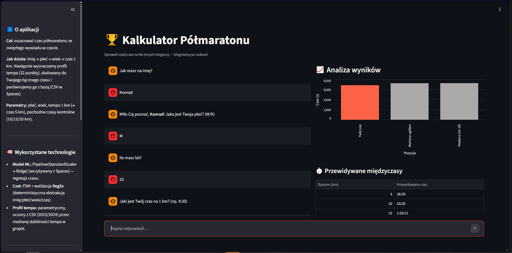
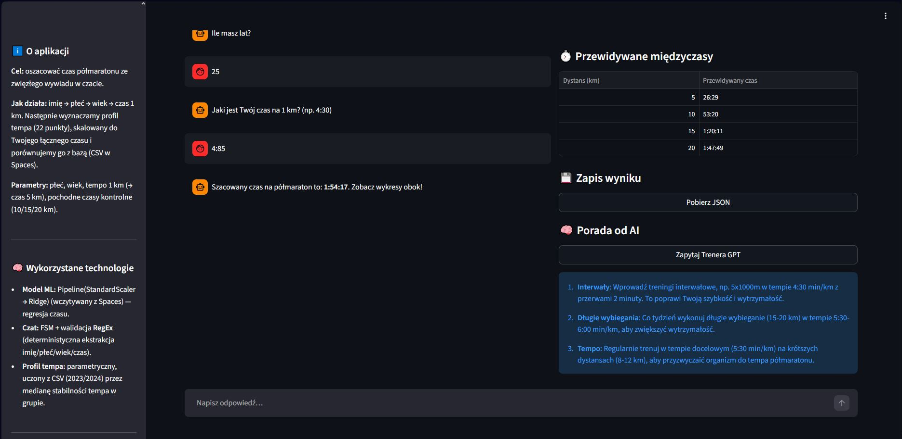
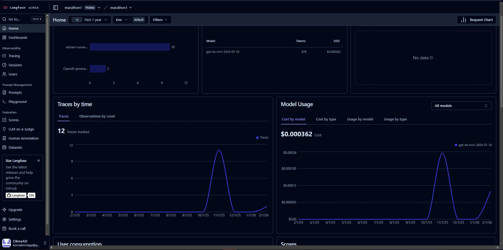

🏃♂️ AI Half-Marathon Inference Engine & Pacing Assistant
🎯 System Overview & Business Objective
An end-to-end predictive application estimating half-marathon completion times via a conversational UI. The system leverages an L2 regularized machine learning model trained on historical runner telemetry. Beyond inference, the engine generates customized, vectorized pacing profiles and integrates a monitored LLM for context-aware training recommendations.
🛠 Tech Stack & Ecosystem
- Frontend & State Management: Streamlit (FSM-based dialogue orchestration).
- Machine Learning:
scikit-learn(Ridge Regression, Pipeline architecture). - Data Engineering & Computation:
NumPy(vectorization),Pandas. - Cloud Storage & MLOps: AWS S3 / DigitalOcean Spaces (stateless artifact retrieval).
- Generative AI & Observability: OpenAI API (GPT-4o-mini) + Langfuse (LLM telemetry).
- Data Visualization: Altair.
🏗 Key Architectural Decisions
The application is architected for low latency, stateless execution, and robust error handling:
- Vectorized Computation Engine (NumPy): Eliminated native Python
for-loops in favor of vectorized operations (np.cumsum,np.interp). This generates a 22-point cumulative pacing profile with strictly O(1) operations per array, aggressively minimizing computational overhead. - Deterministic UI State Orchestration (FSM): The conversational interface is strictly governed by a Finite State Machine. Pre-inference input sanitization is enforced via RegEx validators, preventing prompt injection and ensuring data integrity before the payload reaches the ML pipeline.
- Stateless Cloud-Native Design: The application dynamically loads serialized model artifacts (
.pkl) and aggregational reference data (.csv) directly from S3-compatible object storage. This decouples the codebase from heavy binary files and streamlines PaaS deployment. - LLM Telemetry & Observability: Implemented the
langfuse.openaiwrapper to establish comprehensive observability. This guarantees granular monitoring of token consumption, latency spikes, and log quality, critical for production-grade GenAI integration.
📸 System Telemetry & Output



🧠 Predictive Model Architecture
Inference is driven by a robust, non-leaking data pipeline: Pipeline([('scaler', StandardScaler()), ('ridge', Ridge())]).
- Training Corpus: Aggregated and sanitized historical dataset (2023-2024) comprising N = 18,377 unique observations.
- Cross-Validation Metrics (CV=5):
- R² Score: 0.9834 (capturing >98% of dataset variance).
- Mean Absolute Error (MAE): ~54 seconds over a 21.0975 km distance.
- Production Heuristics: The deployed model intentionally broadens the confidence interval (±5 minutes) to account for stochastic variance introduced by subjective, user-reported feature inputs via the chat interface.